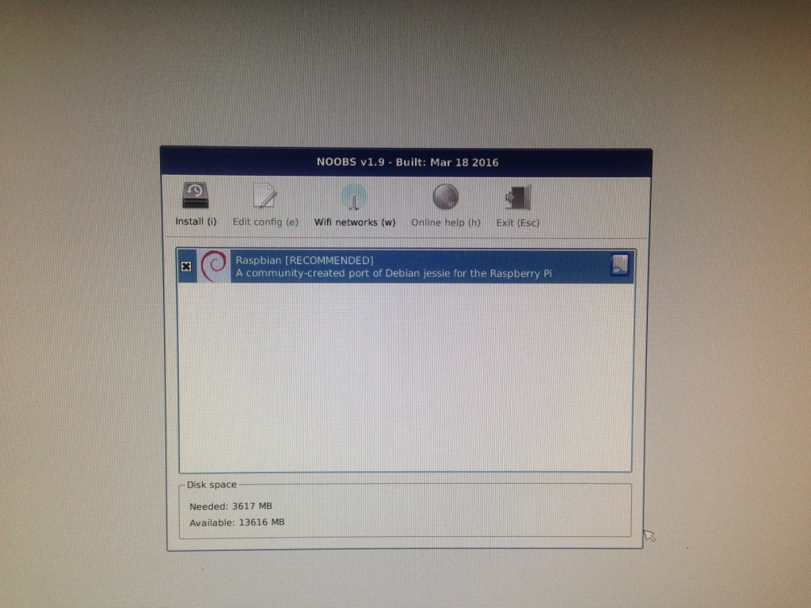
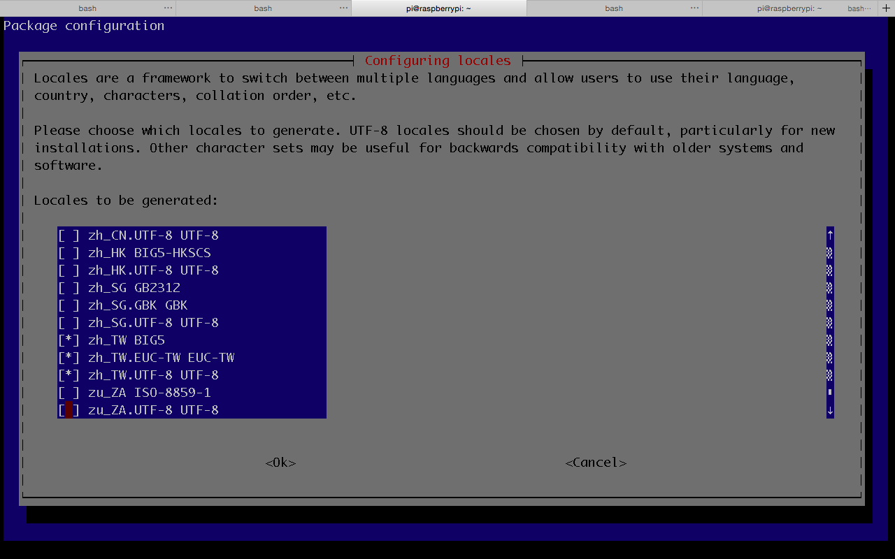
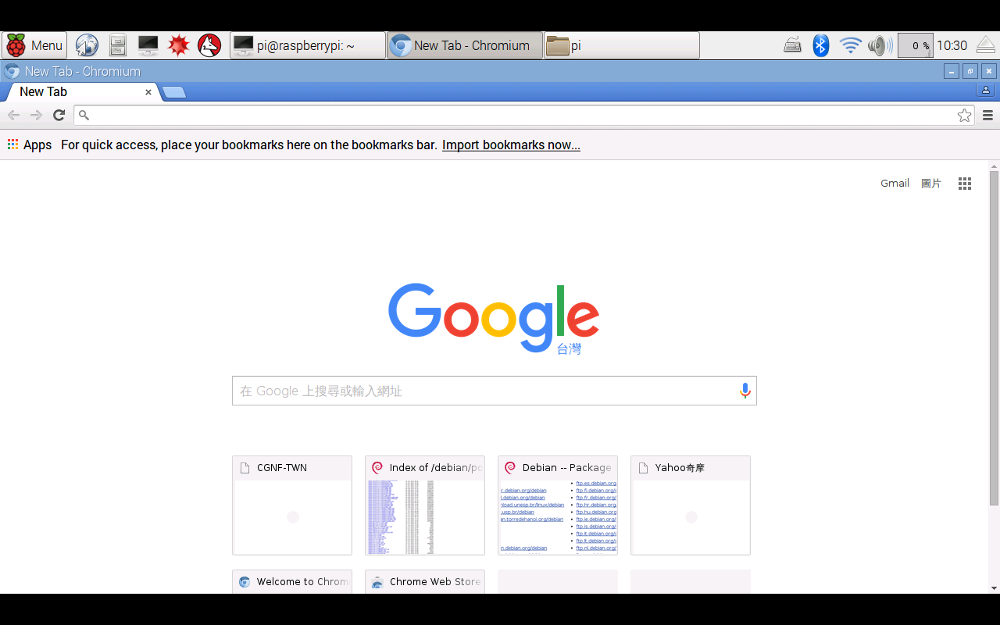

為了以最小金額架伺服器，Raspberry Pi 變成最近研究的課題了。在網路上很容易可以買到Raspberry Pi以及相關的配件，身為一個新手，不想要耗費太多大腦，所以購入最適合新手的品項：
1. Raspberry Pi 3 Model B
2. 工控 ABS 透明殼(可壁掛) + 三片散熱片 NT$150
3. 樹莓派記憶卡: 加購 金士頓 16G / C10 含安裝 NOOBS 多系統開機
4. 樹莓派大電流供電組: 東芝 TOSHIBA 10W USB 電源器 + JBL 5V4A 數據電源線 NT$220
5. 其他配件選購: SONY HDMI v1.4 視訊傳輸線 NT$95
開始安裝Raspberry Pi
Raspberry Pi的基本硬體安裝不是太困難，一開始只要接上滑鼠、鍵盤和螢幕，插入SD卡，最後接上電源，就可以看到開機畫面。由於這次買的配件，根本就是新手包，SD卡已經內裝NOOBS了，所以省掉下載作業系統安裝程式的時間。NOOBS是給新手用的作業系統安裝程式，內涵Raspbian，而Raspbian則是Debain-based 的Linux作業系統，所以接下來都可以用Debian Linux的指令操作。
安裝Rsapbian非常簡單，大概是這篇中最簡單的部分，只要選擇Raspbian，點下install，然後等個半小時左右就結束了。

noobs
安裝中文環境
安裝完之後，畫面就是一個大樹莓的桌面（跟Pokemon Go的Razz Berry有九成像），似乎一切都很美好，但打開瀏覽器，就會發現，這時的Raspbian沒有中文環境……，身為一個台灣人還是需要中文環境啊~~所以需要來調整一下語言環境：
1. 調整之前先update一下套件
sudo apt-get update2. 然後安裝中文字型：文泉驛微米黑、文泉驛正黑、文泉驛點陣宋體。（這裡真的要感謝葉難的網誌)
sudo apt-get install ttf-wqy-microhei ttf-wqy-zenhei xfonts-wqy經過以上步驟，現在應該就可以顯示中文了，不過還是不能輸入中文，所以還需要以下步驟：
3. 設定locales
sudo dpkg-reconfigure locales選擇en_US.UTF-8 UTF-8、zh_TW BIG5、zh_TW.EUC_TW EUC-TW、zh_TW.UTF-8 UTF-8，使用空白鍵選擇。這個步驟如果選錯，那之後的中文輸入就會變得很怪異。

4. 安裝中文輸入法scim-chewing。
sudo apt-get install scim scim-table-zh scim-chewing接下來就可以使用中文輸入了，Ctrl+space可以轉換中英文輸入，跟一般用法相同。
遠端控制
遠端控制最好要有固定IP，否則出門在外，就不容易連進家裡的Raspberry Pi了。除了用ssh之外，介紹兩個方法：
- TeamViewer：相信大家都對此不陌生，TeamViewer也有出給Raspberry Pi的版本，讓大家可以不用固定IP，也可以靠ID連進Raspberry Pi，網址：https://www.teamviewer.com/iotcontest/。不過，這是免費版本，畫面有點小，而且連線三小時斷線之後，就可能連不上了……。
- Microsoft Remote Desktop：這個真的頗好用，不過從外面連進來，一樣會需要固定IP。首先，會需要在Raspberry Pi執行sudo apt-get -y install xrdp，安裝xrdp。接著，在自己的電腦安裝Microsoft Remote Desktop，再設定一下連線的參數，就可以開心連線了。
設定時區
因為Raspberry Pi是英國生產的，所以時區當然是英國時區，這對台灣人來說不太方便，按照以下步驟可以改成台灣時區：
1. 在terminal執行tzselect，選擇Asia，再選擇Taiwan。
2. 在/home/pi/執行nano .profile之後，進入.profile新增一行TZ='Asia/Taipei'; export TZ，然後重開機。
接下來，應該Raspberry Pi就完全是台北標準時間了！
安裝chrome的姊妹品- Chromium
雖然Raspbian有內建瀏覽器Web，不過還是有一點不習慣，但似乎也沒辦法直接安裝Chrome，所以只好安裝Chromium了。Chromium相當於Chrome的工程版，之前Arch Linux也需要安裝Chromium。執行以下指令，就可以完成安裝了：
# 抓安裝檔
wget https://dl.dropboxusercontent.com/u/87113035/chromium-browser-l10n_45.0.2454.85-0ubuntu0.15.04.1.1181_all.deb
wget https://dl.dropboxusercontent.com/u/87113035/chromium-browser_45.0.2454.85-0ubuntu0.15.04.1.1181_armhf.deb
wget https://dl.dropboxusercontent.com/u/87113035/chromium-codecs-ffmpeg-extra_45.0.2454.85-0ubuntu0.15.04.1.1181_armhf.deb
#開始安裝
sudo dpkg -i chromium-codecs-ffmpeg-extra_45.0.2454.85-0ubuntu0.15.04.1.1181_armhf.deb
sudo dpkg -i chromium-browser-l10n_45.0.2454.85-0ubuntu0.15.04.1.1181_all.deb chromium-browser_45.0.2454.85-0ubuntu0.15.04.1.1181_armhf.deb
